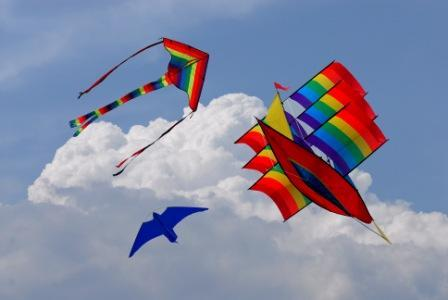
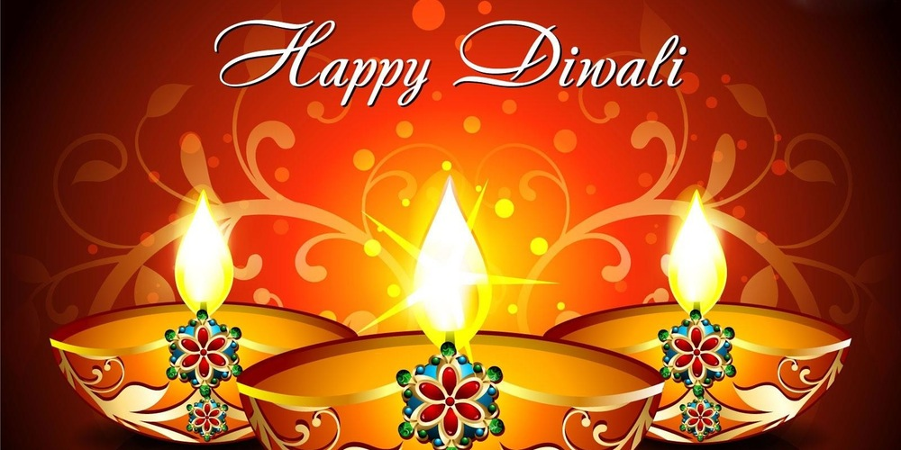
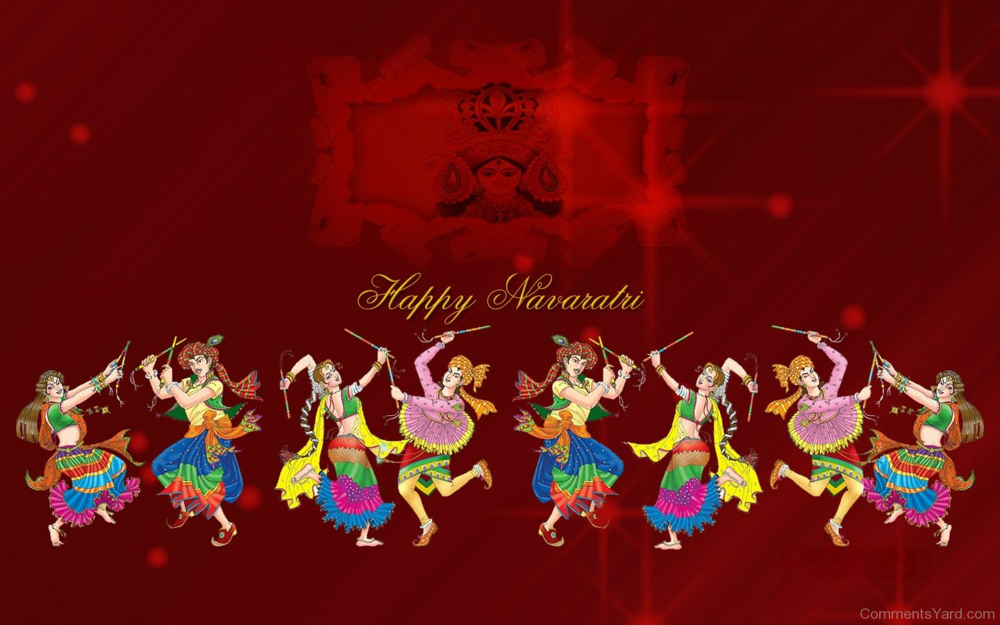

Up Coming event
Celebration of pramukh swami maharaj's 95th birthday
Pujya Pramukh Swami Maharaj is the fifth spiritual successor of Bhagwan Swaminarayan and the present leader of Bochasanwasi Shri Akshar Purushottam Swaminarayan Sanstha. He leads an austere life of lifetime celibacy, without personal wealth or comfort. Representing the essence of Hinduism,his compassion for humanity, universal wisdom and striking simplicity have touched many world religious and national leaders. But most important is his quiet, undisturbed love for God which rises beyond all borders of nation, race and religion.
for preview of celebration click here...> previewfor more inforamtion click here...> bapa's
Festival
Uttarayan
On January 14 the sun enters the rashi Capricorn. This is known as 'Uttarayan' or Makar Sankranti. Sankranti means the entry of the sun from one zodiac to another.
From the south the sun shifts northwards. Daylight hours increase from this day. The actual sankranti occurs in an extremely short period.
The sun's sankranti also occurs in other rashis, as do other planets. However only the sun's sankranti into Makar is considered auspicious and meritorious. According to Jaimini rishi, 12 hours and 46 minutes pre-and-post sankranti are considered sacred. During this time-span, the cow, edible food, money, vehicles, clothes, flowers or grass are donated to Brahmins, the poor and ascetics; resulting in infinite punya(merits). Haribhaktos donate grains or money in the mandir.
for more inforamtion about uttrayan click here...> UttarayanDiwali
The sacred and brilliantly lit festival of Diwali is an integral part of the ancient Indian civilization and its history is magnificently intertwined with origins and evolution of Hindu religion. Today, this festival has become epitome of enjoyment and is celebrated with great exuberance across the country. The mere mention of Diwali conjures up images of diyas, firecrackers and gifts; however, Diwali is not just about these things, there is a much deeper significance to it. Tracing the roots of this festival and understanding its history may help one actually fathom the real meaning of Diwali. This article is an endeavor to shed light on the history behind the origins and grand celebrations of this vivacious festival.
for more inforamtion about Diwali click here...> diwaliNavratri
Hindu festival of nine nights dedicated to the glorification of Shakti, the feminine form of the Divine. During these nine nights, the mother goddess is worshipped in nine different forms. Navratri culminates on the 10th day with the festivities of Vijayadasham, also known as Dussehra, which celebrates the triumph of good over evil. A common greeting during this festival is Shubh Navratri (Happy Navratri).
Navratri is celebrated all over India and among the Hindu diaspora with great fanfare. Prior to the festival, skilled artisans prepare clay models of the goddess in her various manifestations. Many Hindus take part in special ceremonies, rituals, fasts and festivities. People buy new clothes, prepare delicious sweets and buy gifts for family and friends.
for more inforamtion about navratri click here...> navratri